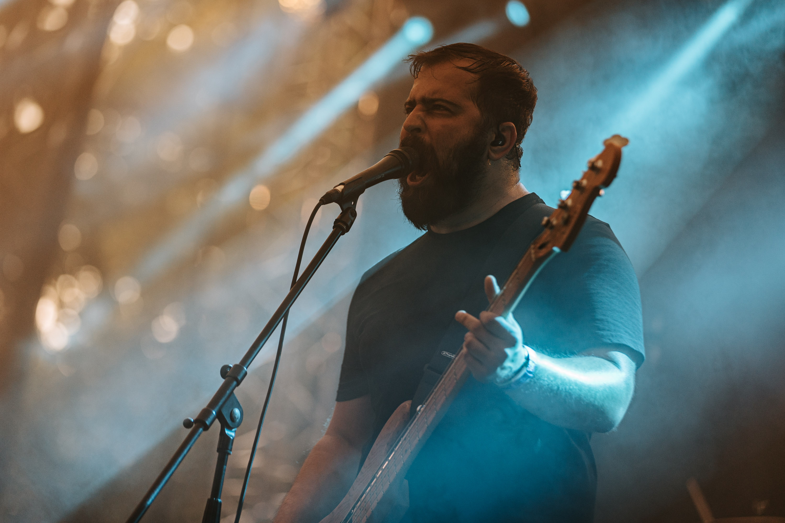
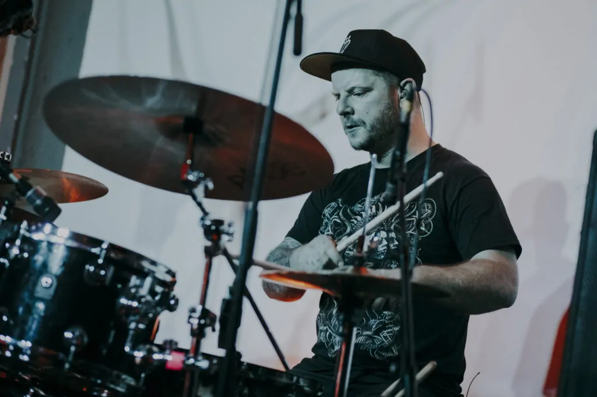

A zenekar tagjai
A Lazarvs zenekar tagjai tehetséges zenészek, akik mind elkötelezettek a zenéjük iránt.

Áron András - Apey - ének, gitár
A Lazarvs énekese és gitárosa, korábban a Kelly Hits the Blue Sky-ban játszott, amely grunge-os hangzásával vált ismertté. Apey a Kelly után saját projektbe kezdett, ami 2009-ben az Apey & the Pea formációhoz vezetett, amit később Lazarvs névre kereszteltek át. A Lazarvs mellett több bandát is alapított.
Balogh Attila - Jozzy - basszusgitár
A Lazarvs jelenlegi basszusgitárosa, 2013 óta tagja a zenekarnak. Elődje, Prepelicza Zoltán helyét vette át, aki az eredeti Apey & the Pea felállás basszusgitárosa volt. Balogh Attila eddigi zenei hátteréről kevesebb információ található, de a Lazarvs új irányvonalában fontos szerepet játszik.
Makai László - dob
A Lazarvs dobosa, aki már több projektben is kipróbálta magát. Az Apey & the Pea előtt a Remembering the Steel tribute bandában és a The Last Charge hardcore zenekarban játszott. Tapasztalata a magyar metal színtér több ágára kiterjed, és a Lazarvs dobosaként továbbra is meghatározó alak a hazai metal világában. Emellett dobtanárként dolgozik.